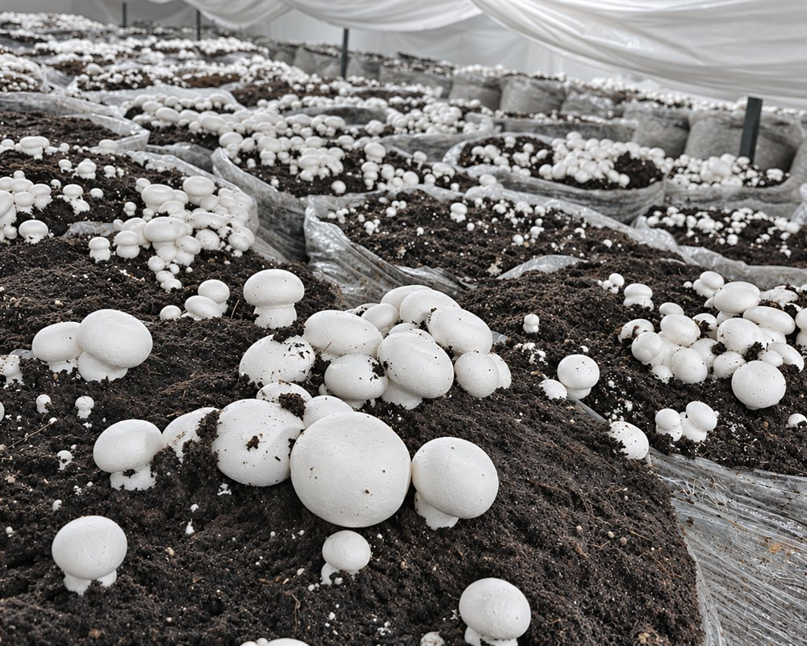
Button
Mild and tender. A versatile choice for sautés, soups, and everyday cooking.
Organic mushroom farming
Discover four delicious varieties of organic mushrooms, grown with sustainable practices and harvested for farm-to-table freshness.
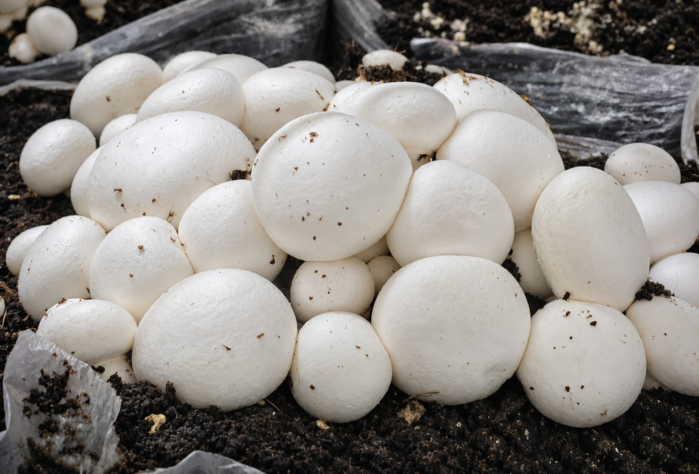
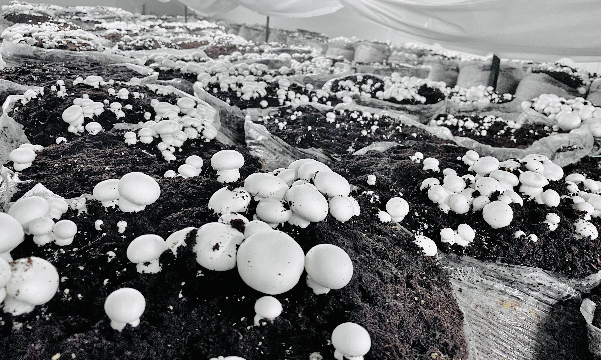
Our farm
At Mabaagro, we pair traditional farming knowledge with modern growing facilities to cultivate flavourful organic mushrooms.
Our harvest
Four varieties for everything from a quick sauté to a weekend grill.

Mild and tender. A versatile choice for sautés, soups, and everyday cooking.
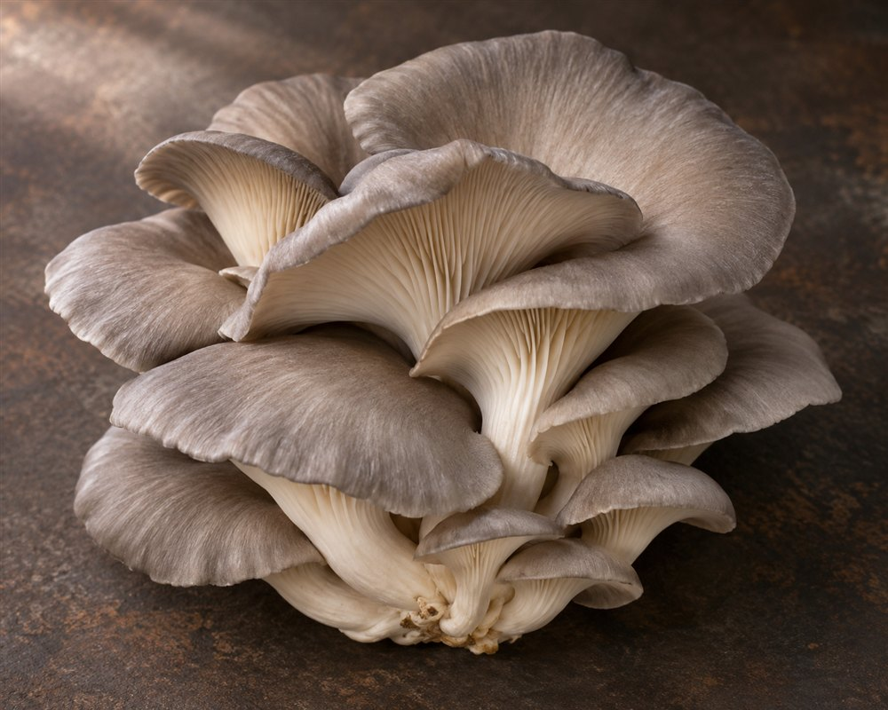
Delicate and silky. Tear into strips for stir-fries or pan-fry until golden.
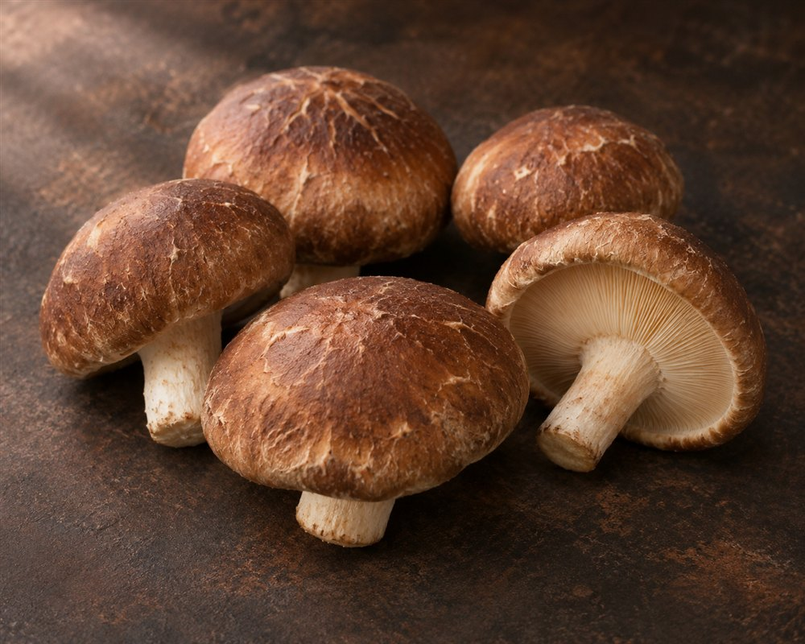
Deeply savoury. Add to broths, noodles, and rice dishes for a rich umami flavour.
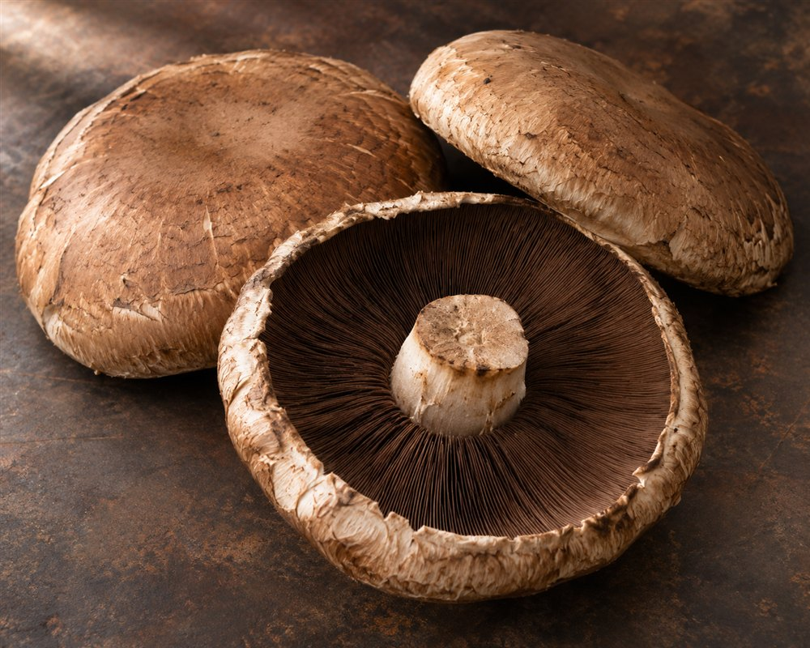
Firm and meaty. The broad caps hold up well on the grill or in a sandwich.
From horticulture to hospitality, meet the organisations we work with.
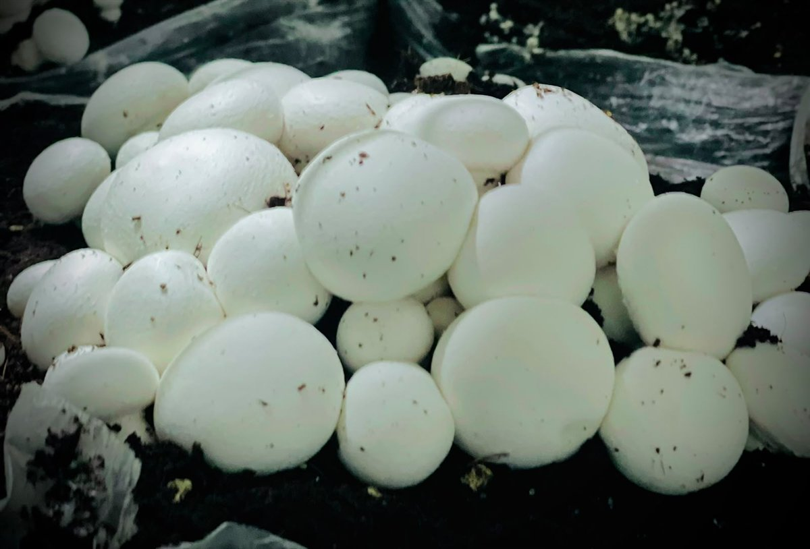
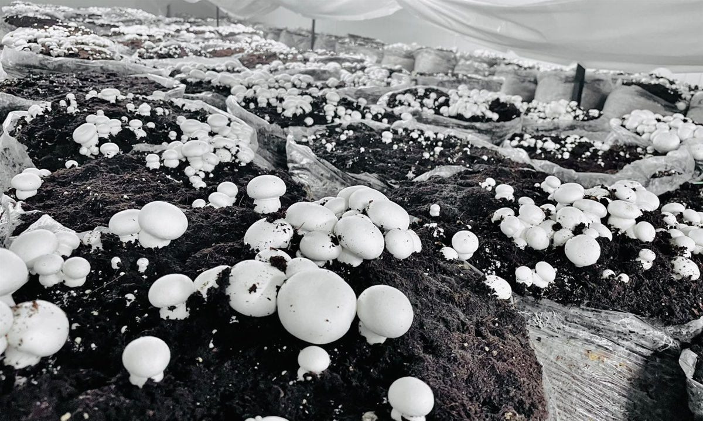
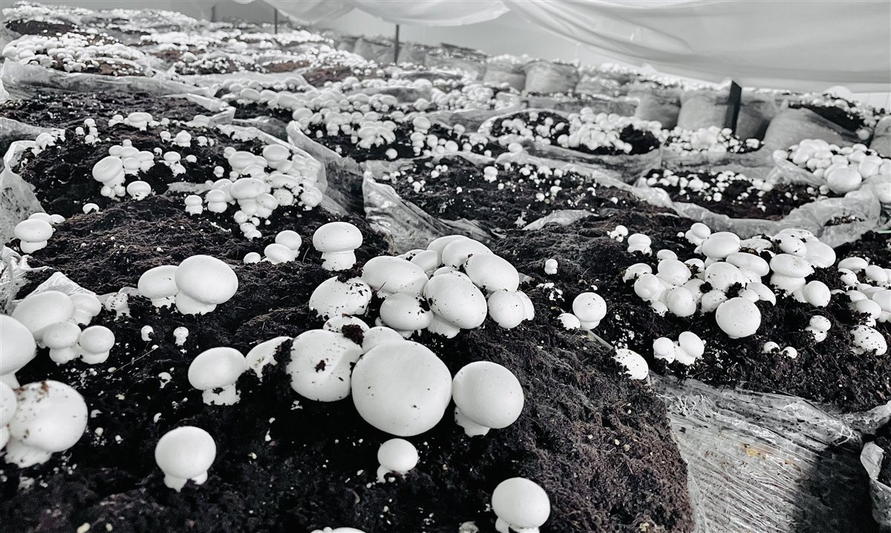
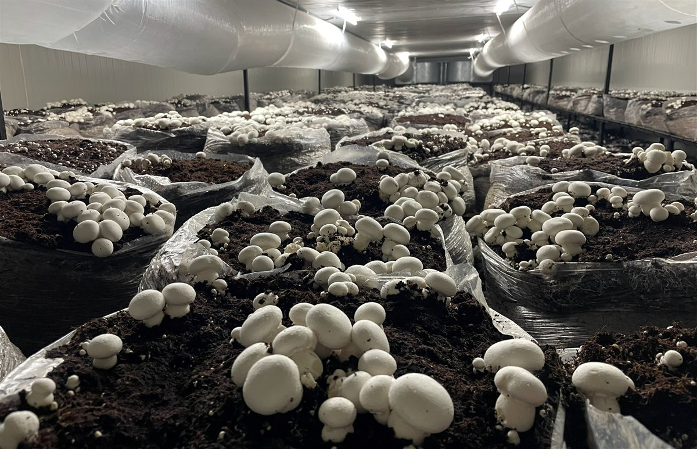
Mabaagro collaborated with the Uttar Pradesh Department of Horticulture and Food Processing to showcase our mushrooms at the department’s stall.
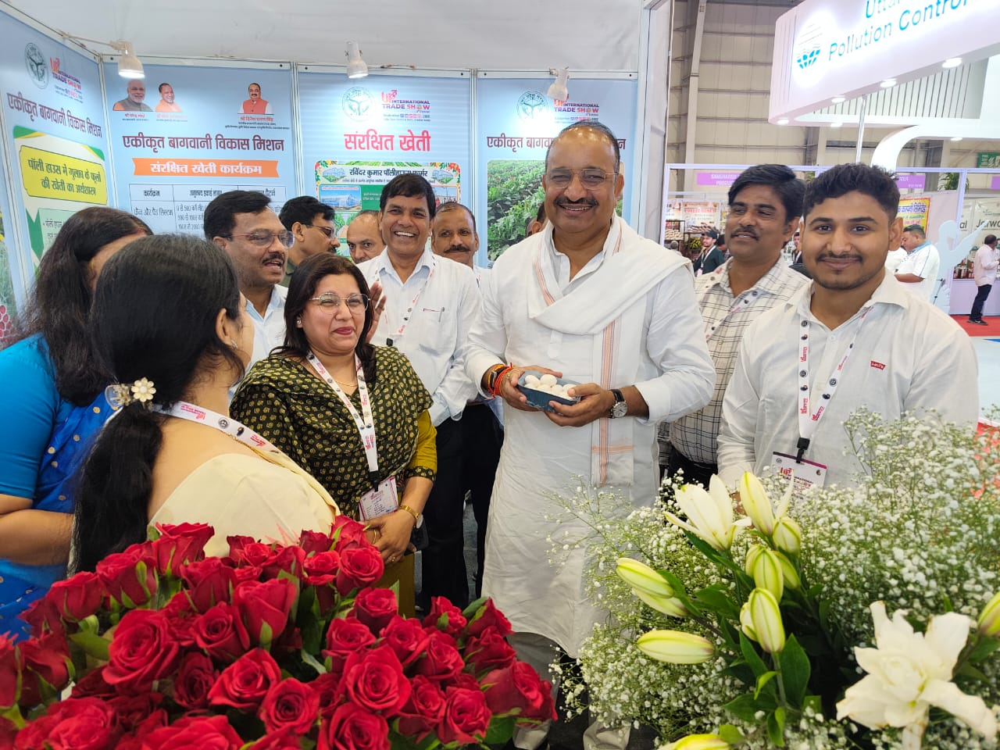
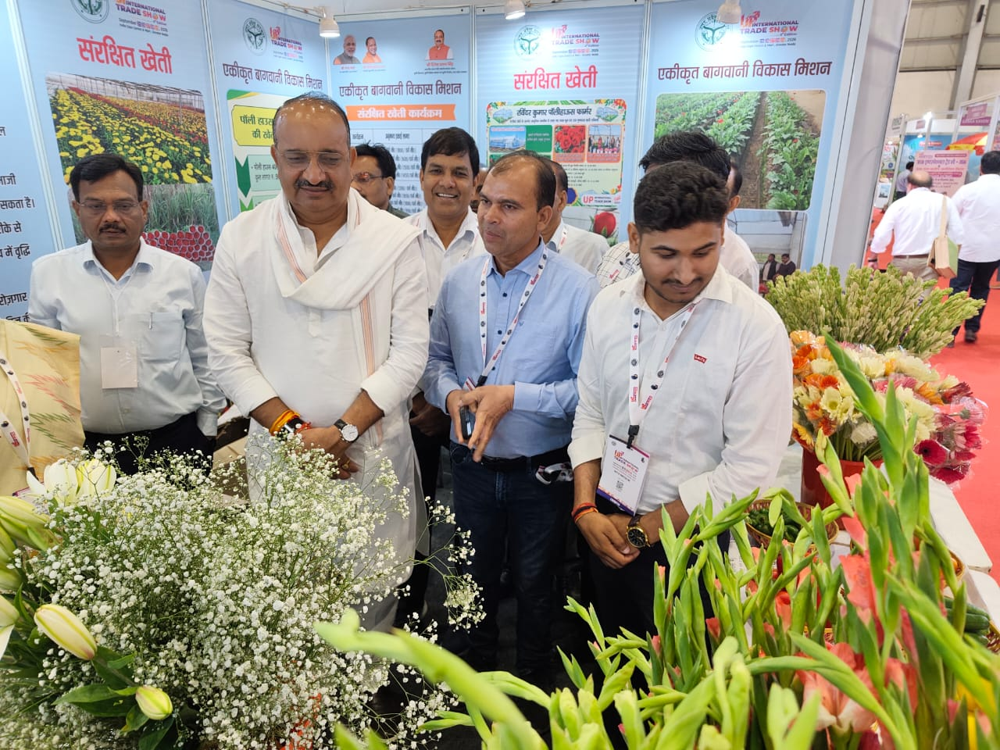
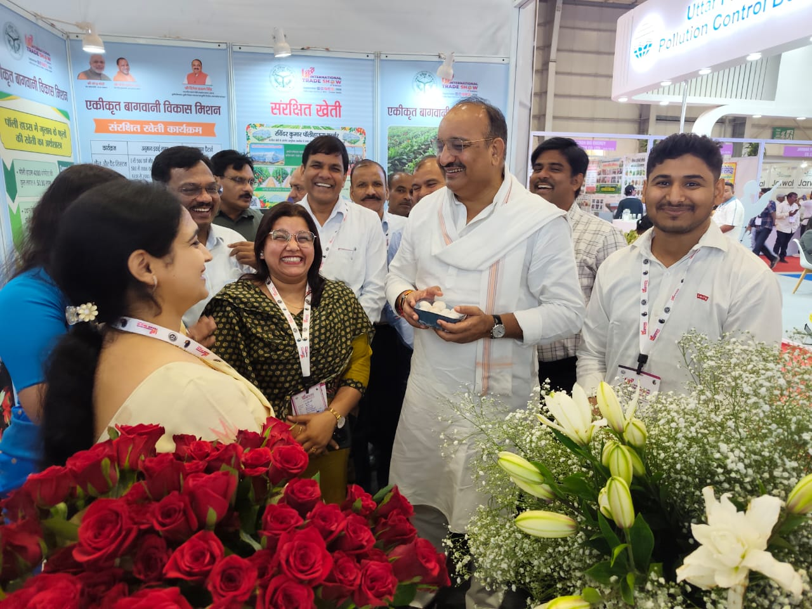
Our founder delivered a guest lecture on mushroom marketing and sales at G.B. Pant University of Agriculture and Technology, Pantnagar, Uttarakhand.

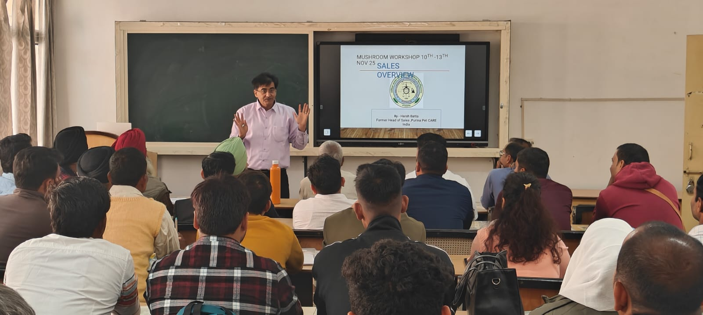
Dr. H. Bijoy Singha, a professor at Assam Agricultural University, presented an award to our founder.
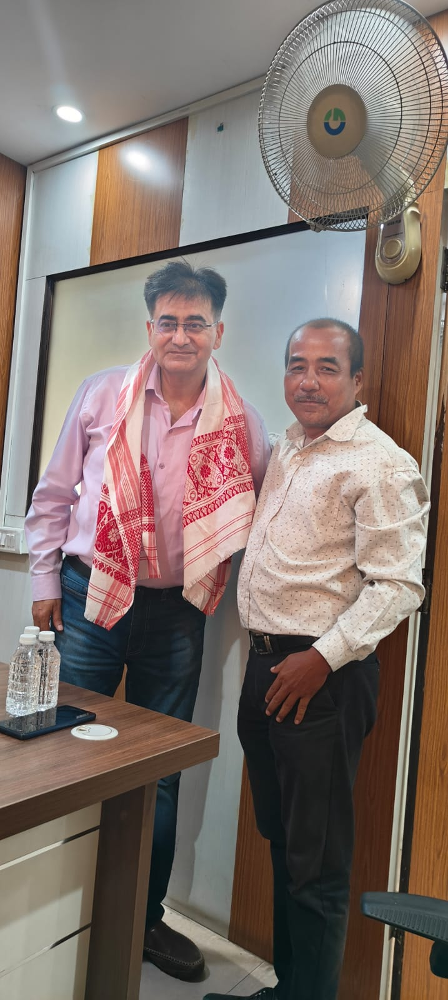
Get in touch
Ask us about availability, placing an order, or working with Mabaagro.